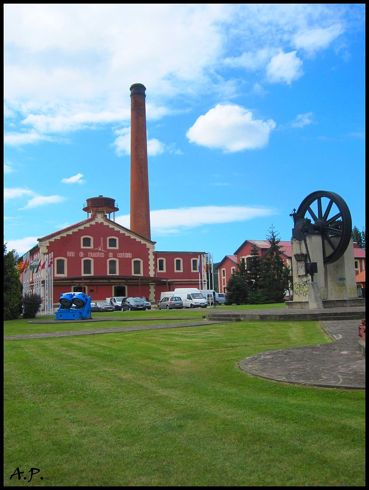

| NOMBRE | Andres |
| APELLIDO | Dosal |
| POBLACION | Vioño de Pielagos |
|
|
La inmobiliaria TORRELAVEGA |
En 1985 el edificio fue restaurado conservando el original estilo arquitectónico industrial, mediante un acuerdo entre el Ayuntamiento de Torrelavega y la Diputación Regional de Cantabria. Este año El Gobierno de Cantabria ha dado el visto bueno a la declaración de la antigua fábrica de La Lechera de Torrelavega como Bien de Interés Cultural, en la categoría de monumento  |